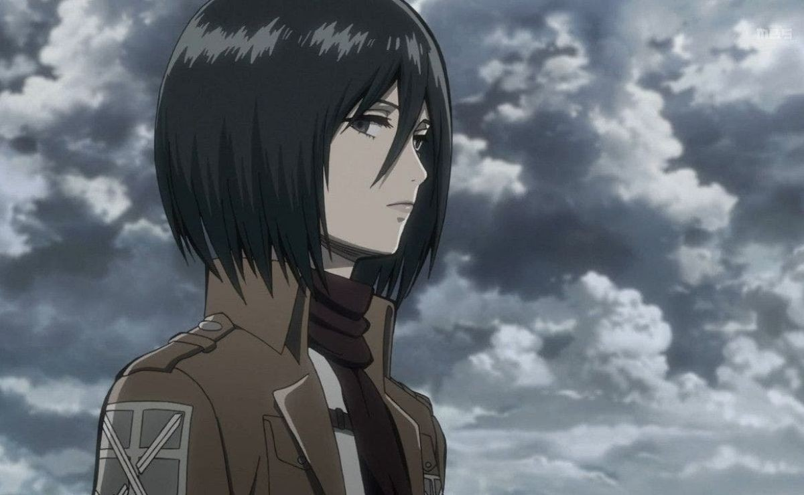
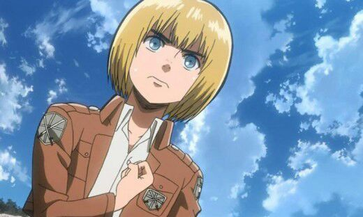

Personajes

Eren Yeager es un personaje ficticio del manga Shingeki no Kyojin, creado por Hajime Isayama. Eren es un adolescente que jura vengarse de enormes criaturas conocidas como titanes que devoraron a su madre y destruyeron su ciudad en la Muralla María. Estatura: 1.70 m - 1.83 Edad: 15-19
Levi Ackerman (リヴァイ・アッカーマン Rivai Akkāman?), también referido como Capitán Levi (リヴァイ兵長 Rivai Heichō?), es el capitán de escuadrón (兵士長 Heishichō?, literalmente "líder de los soldados") del escuadrón de operaciones especiales del Cuerpo de Exploración, y es conocido como "el soldado más fuerte de la humanidad".
Es una joven de origen asiático, la penúltima sobreviviente del clan Ackerman, ya que están: Levi Ackerman y Kenny Ackerman. De niña, fue salvada y adoptada por Eren y su familia, por lo que ha prometido protegerlo sea cual sea la situación. Mikasa es considerada una persona con habilidades extraordinarias, aunque siempre se mantiene fría excepto cuando Eren está en peligro. Después de la caída de Shiganshina, decide junto a Eren y Armin unirse al ejército en donde se graduaría primera en la Tropa de Reclutas N°104, y posteriormente se unió al Cuerpo de Exploración para combatir a los titanes. Conforme avanza el manga se revelan más detalles sobre sus orígenes y su clan. Es la protagonista de la novela ligera «Lost Girls». En la adaptación japonesa su seiyū es Yui Ishikawa, en el doblaje español Laura Prats, y en Latinoamérica es interpretado por Ana Lobo.
Nació y creció en el distrito Shiganshina y amigo de la infancia de Eren y Mikasa, quienes siempre lo protegían de unos matones debido a su timidez y debilidad física, se graduó en la Tropa de Reclutas N°104, y más tarde se unió al Cuerpo de exploración. No destaca mucho por habilidades físicas, pero fácilmente lo compensa con su gran inteligencia y astucia. Durante la batalla para recuperar Shinganshina, utiliza una estrategia con la que logran derrotar al «titán colosal». Sin embargo, Armin queda al borde de la muerte, por ello, se le administra una inyección especial que le permite transformarse en titán y devorar a Bertolt Hoover y adquiere los poderes de este. Cuatro años más tarde participa en el ataque a «Marley» que destruye toda la armada mediante con el mismo poder del monstruo. En la adaptación japonesa su seiyū es Marina Inoue, en el doblaje español por Marc Gómez, y para Latinoamérica es Héctor Ireta de Alba.
